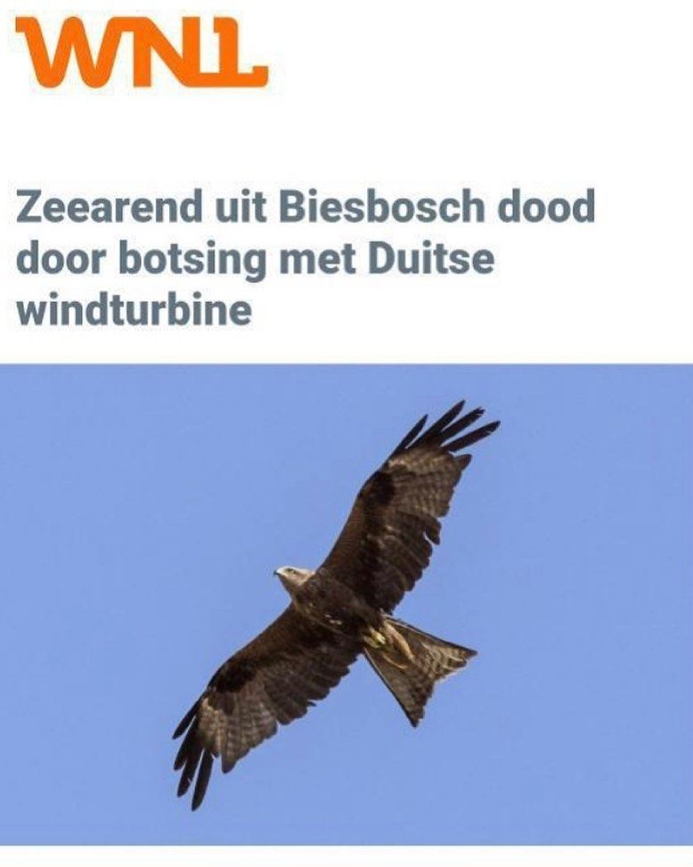

Zwarte wouw, geen zeearend
28 februari 2021 · Omroep WNL
- Op de foto
- Zwarte wouw
- Het ging over
- Zeearend

Goedemorgen Nederland @omroepwnl ! Deze Zwarte wouw is hopelijk nog springlevend, in tegenstelling tot de Zeearend die in 2 stukken in Duitsland is gevonden.